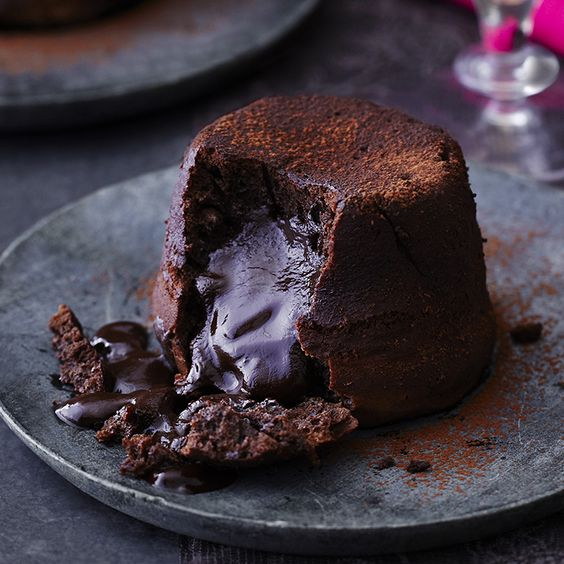

Chocolate fondant

An easy recipe to make this favorite melt-in-the-middle chocolate dessert.
Still a winner on dinner-party menus.
Ingredients:
- 4 tbsp cocoa
- 50g white chocolate
- 200g 70% dark chocolate
- 200g butter, plus extra for the moulds
- 4 whole eggs, plus 3 yolks
- 90g golden caster sugar
- 25g plain flour
Steps:
- Lightly butter 8 × 150ml pudding moulds.
Spoon some cocoa into each and turn to coat the inside right up to the rim.
Tap out the excess cocoa, you just want a thin dusting.
- Heat the oven to 180C/fan 160C/gas 4.
Gently melt the white and dark chocolate with 200g butter in a bowl over a pan of simmering water.
Don’t let the bowl touch the water, or it will get too hot and could cause the chocolate to seize (go grainy).
- Put the egg yolks, whole eggs and sugar in a bowl and sit over another pan of simmering water.
Whisk with electric beaters until the volume has increased and the mix is thick, pale and fluffy.
It will leave a trail behind when you lift up the beaters.
- Stir the flour into the chocolate mixture until it disappears, then fold the chocolate into the egg mixture.
Don’t worry if you knock air out of it, you want to get the chocolate really well mixed in.
- Pour into the moulds leaving a space of about 1 cm at the top for the puds to expand.
Put them onto a baking sheet and cook for 9-10 minutes.
The puddings will have formed a crust on the top and start to come away from the side of the moulds.
Leave to stand for 30 seconds before turning out onto serving plates. Serve with cream if you like.